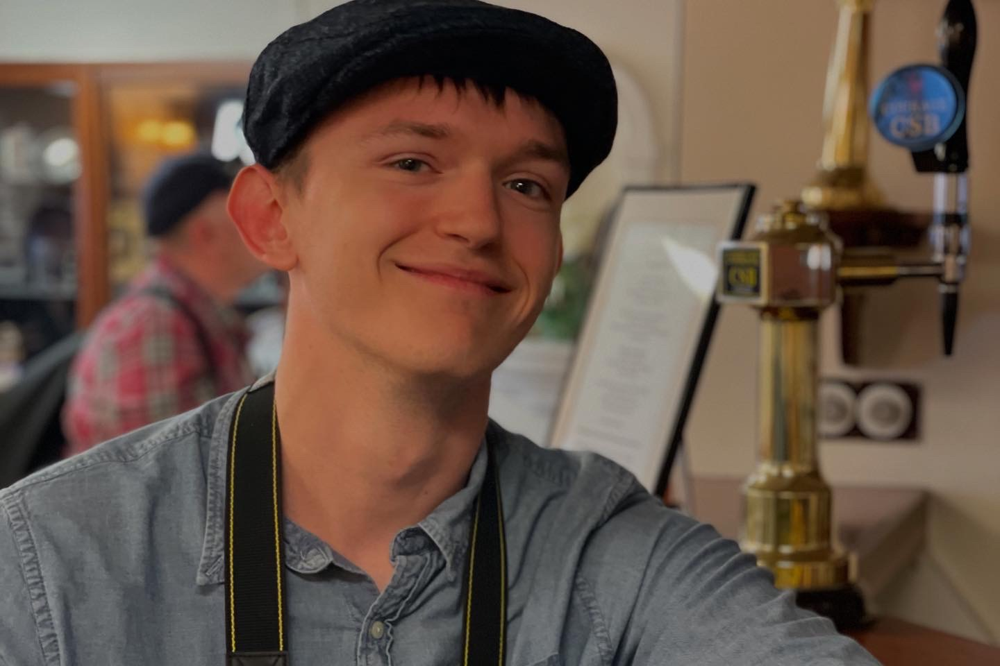

About
I am a Belgian computer scientist trained at the university of Mons and PhD candidate at the ULB (Université Libre de Bruxelles) in QuIC
(centre for Quantum information and Communication) under the supervision of Jérémie Roland. As a researcher, my goals are about finding interesting results in the field of quantum computation and, more broadly, theoretical computer science.

Me in the Royal Yacht Britannia
(Edinburgh, UK)
Research interests
My research interests are mainly centered around
- quantum algorithms,
- quantum computational complexity, and
- complexity theory in general.
Current work
My current research is about exploiting a novel framework introduced in the paper Taming Quantum Time Complexity.
Publications
In progress...
Teaching
Teaching assistant at ULB
Contact
Email: julien.ladeuze [at] ulb.be
Curriculum Vitae
Education
- 2024-2026 : Master's degree in computer science in research focus with the highest distinction at the university of Mons
- 2024-2025 : Exchange program at Soongsil University (South Korea)
- 2021-2024 : Bachelor's degree in computer science with a distinction at the university of Mons
Award(s)
- 2026 : Prize of the best Master's thesis of the computer science department at the university of Mons
Past research
- Late 2025 : Research internship of three months at QuIC under the supervision of Jérémie Roland
- Study of quantum query lowerbound techniques (e.g. polynomial method)
- Vulgarisation of quantum computation for a large public of beginners
- Late 2024 : Research initiation internship of one month under the supervision of Gaëtan Staquet and Véronique Bruyère
- Study of Active Leaning of Mealy Machines with Timers
- Implementation of algorithms and benchmarking in Rust
Miscellaneous
- 2022-2026 : Member of the student association CPUMONS (Competitive Programming and Mathematics UMONS)
- Organisation of exercise sessions for freshmen in Python and Java
- Vice-President during the academic year 2024-2025
- Vulgarisation around the computer science field for a large public at SPARKOH
- Participation to the Benelux Algorithm Programming Contest (2023)
-
Early 2024 : Seminar on quantum computing
- Presentation of the main ideas behind quantum compution
- Management of a team of three people : Maxime Bazin, Kacem Barkani and myself
- Link for the presentation (in french)